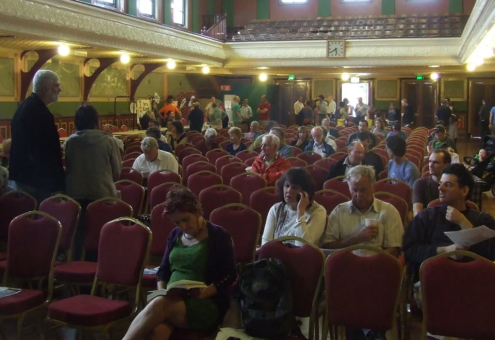

이재명 대통령, 2차 부처 업무보고 나흘째…과기·국토·복지부 보고
이재명 대통령이 지난 15일부터 청와대 영빈관에서 진행 중인 두 번째 부처 업무보고를 16일에도 이어갔다. 이번 업무보고는 '삶으로 체감하는 대체불가 대한민국'을 슬로건으로 내걸고 국무조정실과 19부 6처 18청 7위원회, 산하 공공기관 140곳을 대상으로 순차적으로 진행되는 일정이다. 16일에는 오전 10시 과학기술정보통신부와 우주항공청, 방송미디어통신위원회, 개인정보보호위원회가 보고에 나섰고, 오후 2시에는 국토교통부와 행정중심복합도시건설청, 새만금개발청, 농림축산식품부와 농촌진흥청·산림청, 해양수산부와 해양경찰청이 잇따라 보고를 진행했다. 오후 4시20분에는 보건복지부와 질병관리청, 식품의약품안전처, 성평등가족부, 국민권익위원회의 보고가 이어졌다.
지난해 취임 첫해 진행한 1차 업무보고와 달리, 이번 2차 보고의 가장 큰 특징은 일반 국민이 현장에 직접 참여해 부처 장관들에게 질의할 수 있도록 자리를 마련했다는 점이다. 청와대는 지난 1일부터 6일까지 국민참여단을 공개 모집했는데, 중복 신청자를 제외하고 총 1259명이 몰려 6.3대 1의 경쟁률을 기록했다. 연령과 성별, 관심 부처 등을 종합적으로 고려해 회차마다 약 20여 명씩, 전체 9회에 걸쳐 총 200명이 현장에 참석하는 방식으로 운영되고 있다.

영빈관 무대 배경에도 이번 보고 취지가 반영됐다. 광화문의 상징적 이미지를 바탕으로 국민의 일상을 표현하는 사계절 각기 다른 시간대의 풍경을 더한 화면이 배경으로 사용되고 있는데, 정부 정책이 국민의 실생활과 맞닿아 있다는 메시지를 시각적으로 전달하려는 의도로 풀이된다. 앞서 지난 15일 재정경제부를 시작으로 문을 연 이번 2차 업무보고는 이 대통령의 임기 중반부로 접어드는 시점에 맞춰, 남은 임기 동안의 국정 방향을 국민과 함께 점검하겠다는 취지로 기획된 것으로 전해졌다.

이날 오전 보고를 받은 과학기술정보통신부와 우주항공청은 지난해 출범 이후 진행 중인 우주 개발 프로젝트 추진 상황과 인공지능 관련 정책 성과를 함께 보고한 것으로 전해졌다. 방송미디어통신위원회와 개인정보보호위원회는 온라인 플랫폼 규제와 개인정보 보호 체계 정비 관련 현안을 다뤘다. 오후에 이어진 국토교통부와 농림축산식품부, 해양수산부의 보고에서는 주택 공급 정책과 농어촌 지원 대책 등 국민 생활과 밀접한 정책 현안이 두루 논의된 것으로 알려졌다.
이 대통령은 앞서 15일 첫 순서로 재정경제부 업무보고를 주재하며 "남은 3년11개월이 더 중요하다"는 취지의 발언을 한 것으로 전해졌다. 취임 초반 국정 기반을 다지는 데 주력했던 1차 업무보고와 달리, 이번 2차 보고는 그간의 정책 성과를 국민 앞에서 직접 점검하고 남은 임기 동안의 실행 계획을 구체화하는 데 방점이 찍혀 있다는 게 청와대 측 설명이다. 특히 이번 보고 방식을 두고 여권 안팎에서는 부처별 성과를 순차적으로 공개하는 형식이 마치 시리즈물을 연상시킨다는 평가와 함께, 국민참여단의 높은 경쟁률이 정책 소통에 대한 시민들의 관심을 보여준다는 해석도 나온다.
정치권에서는 이번 국민참여형 업무보고가 임기 2년차를 맞은 정부가 정책 성과를 국민에게 직접 설명하고 현장의 목소리를 정책에 반영하려는 소통 강화 전략의 일환이라는 평가가 나온다. 청와대는 이번 2차 업무보고를 8월 말까지 순차적으로 이어갈 예정이며, 보고 대상에 포함된 나머지 부처와 기관들의 일정도 차례로 공개할 방침인 것으로 전해졌다. 남은 일정에는 문화체육관광부와 여성가족부 등 국민 생활과 밀접한 부처들의 보고도 포함될 것으로 예상되면서, 정부의 하반기 정책 방향이 어떤 형태로 구체화될지에도 관심이 쏠린다.